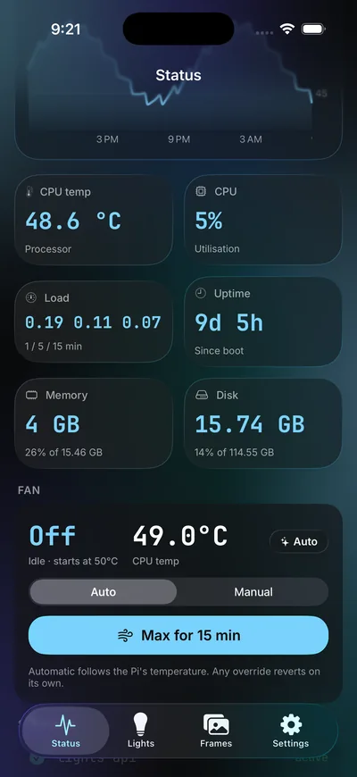
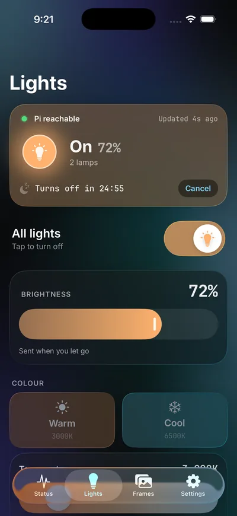
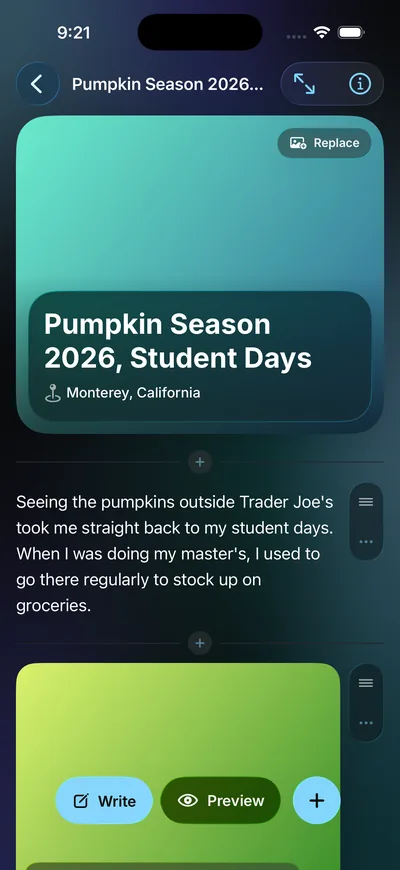

01 · Overview
A small system you can trust
Polaris is a personal assistant that runs on a Raspberry Pi 5 at home. It maintains this website, reports its own health, runs my floor lamps, and writes a public log of every change it makes. I make changes with an AI coding assistant on my laptop; Polaris publishes them, reports its health and logs every change. A few small services I wrote run on it, and an iPhone app talks to them over a private network.
I built it to find out what it takes to make a small, always-on system that you can trust: one that tells you when it’s broken instead of quietly failing.
02 · Hardware
Hardware
- Raspberry Pi 5 (16 GB) running Raspberry Pi OS. Always on and headless
- USB webcam for the flower tracker
- Two Govee H607C floor lamps, controlled through Govee’s cloud API
03 · Architecture
How it works
1. Editing the website
This site is a static site on GitHub Pages, with Cloudflare in front for HTTPS. The Pi keeps a clone of the repository. I make changes with an AI coding assistant on my laptop, or publish photography stories from the iPhone app. Polaris builds the media, commits and pushes, and adds an entry to polaris-log.json for every change. GitHub Pages redeploys within a minute or two, and the dashboard shows the new log entry.
2. Reporting its own health
Every 15 minutes a small Python script collects the Pi’s CPU temperature, load, memory and disk usage, writes them to a JSON file and pushes it. The dashboard reads that file. If the latest report is more than 35 minutes old, it shows the Pi as offline, along with when it was last seen.
3. Controlling the lights
A tiny Flask API on the Pi turns the lamps on and off, sets brightness, colour temperature and colour, and runs a sleep timer. Since it controls something physical, I locked it down:
- It only listens on the Pi itself. Tailscale Serve gives it an HTTPS address that only my own devices can reach, so it isn’t on the public internet.
- Every request needs an access token, which the Pi checks. The page stores nothing secret.
- The API only answers browser requests from this site, and the Govee API key never leaves the Pi.
4. The flower tracker
A systemd timer grabs a webcam frame every five minutes with ffmpeg and publishes it to the dashboard. If the camera is unplugged, the job skips quietly and the dashboard hides the section until fresh snapshots arrive.
04 · The phone app
There’s an app for it
Polaris has an iPhone app, DevRobotics, so I can run it from my pocket. It’s written in SwiftUI for iOS 26 and talks to the Pi over the same private Tailscale network, with its token kept in the iOS Keychain. None of Polaris’s controls are reachable from the public internet.



Screenshots use demo data.
- Status. CPU temperature history, load, memory, disk and services, plus fan control: automatic, a manual speed, or Max. Every override expires on its own, and a timer owned by root on the Pi returns the fan to automatic even if the phone disconnects.
- Lights. The real state of both lamps, a power toggle, brightness, colour temperature and colour, a sleep timer.
- Frames. The photography section of this site. I write photos and stories offline, preview the exact page before it exists, review every change, listed, and publish. The Pi builds the media and pushes the site.
- Staying installed. A free Apple ID expires an app after seven days, so a small agent on my Mac reinstalls it whenever I plug the phone in.
Design choices
- The preview is the real page. The Pi renders an unsent draft with the same template and styles as the live site, so what I review is what ships.
- Hardware gets a way back. Anything that moves or heats something has a limit and a timer that undoes it on its own.
- The Pi cleans up after itself. Previews and uploads share a 2 GB cache that evicts the oldest first.
05 · System design
How the whole system fits together
Polaris, the phone app and my Mac form one small private system. Pick a view.
Architecture
Everything private sits inside one network boundary. Only the finished website and the lamp commands leave it.
Private network
- App API
- Lights API
- Frames pipeline
- Fan helper
Outside services
How it works
- Everything private stays inside the boundary. The phone, the Mac and Polaris talk over one private network, and every request carries a token that is checked on the receiving machine.
- Only three things leave it: the finished website (pushed to GitHub Pages), full-size media (uploaded to Cloudflare) and lamp commands (relayed through Govee’s cloud).
- Secrets stay out of the website and the repositories. The lamp API key lives only on the Pi. The access token lives on the Pi, in the phone’s Keychain and on my Mac.
Publishing
A story goes from an offline draft on my phone to the live site, with a real preview and a review step in between.
- 1Write offlineBlocks of text and photos, saved on the phone.
- 2UploadOnly the photos the Pi doesn’t already have.
- 3PreviewThe Pi builds the real page from the draft.
- 4ReviewEverything that will change, listed.
- 5ApproveOne confirmation publishes the whole inbox.
- 6LiveMedia first, then the commit. About two minutes.
How it works
- Drafts never touch the real inbox until I send them. Previews build in a throwaway folder, so a half-written story can’t be published by accident.
- Uploads are content-addressed. Each photo is identified by its hash, so a re-preview sends only what changed.
- Problems are caught early. A missing date or a missing file is flagged in plain English on the block it belongs to, with a one-tap fix.
- Publishing covers the whole inbox, because the site grid is rebuilt from the whole inbox. That is why the review step lists every change first.
- Media goes up before the commit, so a page never points at a file that isn’t there. If anything fails, the working copy is restored.
Fan safety
A fan override can never outlive its reason. Every one expires on its own, and a few hard limits can’t be argued with.
- 1RequestAuto, Manual or Max from the app.
- 2CheckThe server compares it with the temperature and clamps it.
- 3Hand overA tiny root-owned helper writes the speed, nothing else.
- 4Arm the timerA separate timer returns the fan to automatic.
- Max: 15 minutes
- Manual: 30 minutes
- Minimum speed when warm
- Forced automatic at 75 °C
- Resets on every restart
How it works
- Holding a speed pauses the kernel’s own thermal control, so the app API and the helper both enforce the limits, and the timer that undoes it is owned by root.
- A dropped phone or a crashed service can’t strand the fan. The timer and a one-second watchdog on the Pi act on their own.
- Max ends early once the Pi has stayed cool for a while, and the Pi’s firmware throttling stays on as a last line of defence.
Staying installed
A free Apple ID only signs an app for seven days. A small agent on my Mac keeps it alive without me doing anything.
- 1Plug inThe agent notices the phone on USB.
- 2DecideInstall if under a day is left, or a newer build exists.
- 3Build & installFrom the latest published code.
- 4RecordSave the new expiry and show a notification.
How it works
- There is also a button in the app. “Reinstall now” asks the Mac to do the same thing over the private network, one fixed action, token required.
- It builds from its own copy of the code, kept in step with the published version, because macOS keeps background agents out of the Documents folder.
- One install at a time. A lock stops the plug-in trigger and the button from colliding.
Health
“Online” is a claim, so the dashboard checks how old the claim is.
- 1CollectEvery 15 minutes the Pi samples temperature, load, memory and disk.
- 2PublishThe report is pushed with a timestamp.
- 3JudgeThe dashboard compares that timestamp with the clock.
- 4ShowOlder than 35 minutes reads as stale, with when it was last seen.
How it works
- The app reads live. Its Status tab asks the Pi directly and says “cached” when it can only show the last public report.
- A flower tracker rides along. A timer grabs a webcam frame every five minutes and hides itself when the camera is unplugged.
Components
Six small parts, each doing one job.
iPhone app
Status, lights, the Frames editor and an About screen with the signing countdown.
- SwiftUI
- iOS 26
- SwiftPM
App API
Status, the Frames inbox, previews, uploads, clip previews and fan control.
- Python
- Flask
- systemd
Lights API
Two floor lamps through Govee’s cloud: state, colour and a sleep timer.
- Python
- Flask
Fan helper
The only code that touches the fan, with its own limits and a revert timer.
- Python
- sudo rule
- systemd timer
Frames pipeline
Originals to web sizes, metadata stripped, story pages built, media uploaded.
- Python
- ffmpeg
- rclone
Mac agents
Reinstall the app when the phone is plugged in, and serve the Reinstall button.
- Python
- launchd
Why this way
The choices that shaped it, and the trust model underneath.
Trust model
None of Polaris’s controls are reachable from the public internet. Every request needs a token that is checked on the receiving machine, the app keeps its token in the iOS Keychain, and no secret ever lives in a repository.
Blocks, not one text box
A story is already blocks of text and media, so the editor works in blocks. Converting to blocks and back is lossless, and it was checked against the real renderer.
The Pi builds the preview
The only way to be sure a preview matches the live page is to run the same template and styles that publish it.
Hardware gets a way back
Anything that moves or heats something has a limit and a timer that undoes it on its own.
The Pi cleans up after itself
Previews and uploads share a 2 GB cache that evicts the oldest first, so the server never fills up.
A free Apple ID, kept alive
Rather than paying for a developer account, a small agent absorbs the seven-day limit.
Status is judged, not trusted
Every report carries a timestamp, so a silent failure shows up as offline within minutes.